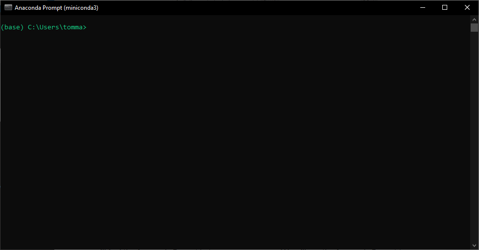

Softwares for the workshop
Python, Anaconda, Conda,virtual environment, Spyder, experimental psychology, tutorial, installation, DevStart, developmental science
This page was created as a guideline to install all the software needed for the workshop! This is just the hub of all the information necessary, but you should follow the Flowchart that will guide you through each section of this guide depending on your OS and your expertise level! Please follow the Flowchart and check out the sections of this page accordingly.
Installing Python
Miniconda
Miniconda is our favorite way to install Python, and for good reason! While you’ve probably heard of Anaconda – that feature-packed GUI many folks use to manage Python, packages, and environments – Miniconda is its sleek, lightweight counterpart.
What makes Miniconda special? It skips all the extra GUI elements and pre-installed packages that come with Anaconda. The result? A much lighter installation that doesn’t weigh down your system! With Miniconda, you get just the essentials: Conda, Python, and a few critical dependencies. This minimal setup gives you greater control over what gets installed, keeping everything lean and efficient. Plus, it includes the default Conda package manager and channels, so you still have full access to the official Conda repository for all your package needs.
To use Miniconda download the installer from Miniconda (remember to scroll down under Anaconda)
The installation process is similar to that of Anaconda. Once the installation is complete, you will find the Anaconda Prompt among your programs. This prompt serves as your interface for installing Python packages and creating environments. To verify everything’s working properly, simply type conda. You’ll be greeted with a comprehensive list of available conda commands ready for you to explore and use (we will see below how to do so).

To use Miniconda download the installer from Miniconda (remember to scroll down under Anaconda)
⚠️ Important
Please make sure that you select the correct version for your system!!! Select the version depending if you have Apple Silicon or an Intel processor.
Once the installation is complete, you’ll have the full power of Miniconda at your fingertips through your terminal! To verify everything’s working properly, simply open your terminal and type conda. You’ll be greeted with a comprehensive list of available conda commands ready for you to explore and use (we will see below how to do so).
Installing python packages
To pre-process and analyze the data we will need some specific packages. It is easy to install and manage packages using conda.
Open the Anaconda prompt and type conda install … and a list of packages. Here we will install pandas (a package to handle dataframes), numpy (library to manage arrays), matplotlib and seaborn (two libraries to plot data), spyder-kernels (to allow interaction with the Spyder GUI that we will cover later on).
conda install pandas numpy matplotlib seaborn spyder-kernelsAfter thinking about for few seconds the prompt will download the package and its dependencies. Occasionally, conda may encounter difficulties locating the precise package you need. In such cases, pip, another renowned Python package manager, can come to the rescue. You might already be aware of pip, versatility for installing and manage packages in Python.
Let’s consider I2MC, an exceptional package processing eye-tracking data. With pip, installation is a breeze. Simply use the following command:
pip install I2MCOpen your terminal and type conda install … and a list of packages. Here we will install pandas (a package to handle dataframes), numpy (library to manage arrays), matplotlib and seaborn (two libraries to plot data), spyder-kernels (to allow interaction with the Spyder IDE that we will cover later on).
conda install pandas numpy matplotlib seaborn spyder-kernelsAfter thinking about for few seconds the prompt will download the package and its dependencies. Occasionally, conda may encounter difficulties locating the precise package you need. In such cases, pip, another renowned Python package manager, can come to the rescue. You might already be aware of pip, versatility for installing and manage packages in Python.
Let’s consider I2MC, an exceptional package processing eye-tracking data. With pip, installation is a breeze. Simply use the following command:
pip install I2MCPerfect now you should have all the libraries to process the data!
Psychopy
Python comes in multiple versions, and sometimes our scripts need specific Python versions or package combinations to run properly. Virtual environments work like separate “sandboxes” that keep dependencies isolated from each other, letting you switch effortlessly between applications with different requirements.
One of Miniconda’s strongest features is how brilliantly it handles environment management. Conda makes it simple to create, export, list, remove, and update environments with different Python versions and packages - exactly what we need for PsychoPy, which performs best with specific Python versions.
We recommend installing PsychoPy in a dedicated virtual environment where you can create and run your studies. To ensure optimal performance, keep this environment as clean as possible with only PsychoPy and the additional libraries required for your study.
Sounds complex but do not worry!! If you managed to install Miniconda, we will guide you through the creation of a virtual environment step by step:
Open again your Anaconda prompt and type:
conda create -n psychopy python=3.8 Conda will ask you to confirm with a y and will create a new environment called psychopy with Python 3.8.
Conda will also tell you that if you want to interact and install packages in the newly created environment, you should activate it. Let’s do it!!! Type:
conda activate psychopy You’ll see that the parenthesis at the command line will change from (base) to (psychopy). This means we are in!!! Now we can install any package and those packages will be contained in this new environment.
As mentioned before, we will use PsychoPy to create our experimental design!! So let’s install it (and also let’s install spyder-kernels that will help us interact with Spyder that we will cover later!). Type:
pip install psychopy spyder-kernels Conda will think and download stuff for a while!! Do not worry if you see a lot of lines popping up! Give conda time and confirm if prompted. After a while, hopefully you will see that everything went well and now you have a nice psychopy environment with PsychoPy in it!!
Installing PsychoPy on macOS with a silicon chipset (especially the latest models, such as the M4) can be challenging due to complex dependency issues. If you are using a silicon-based Mac, it might be best to skip this installation step and use the standalone Psychopy Standalone version, which tends to be more reliable.
However, if you prefer to try the installation process, feel free to proceed and let us know if you manage to get it working. Should the installation fail, please refer to the flowchart and switch to the Psychopy Standalone
Open again your terminal and type:
conda create -n psychopy python=3.8 Conda will ask you to confirm with a y and will create a new environment called psychopy with Python 3.8.
Conda will also tell you that if you want to interact and install packages in the newly created environment, you should activate it. Let’s do it!!! Type:
conda activate psychopy You’ll see that the parenthesis at the command line will change from (base) to (psychopy). This means we are in!!! Now we can install any package and those packages will be contained in this new environment.
As mentioned before, we will use PsychoPy to create our experimental design!! So let’s install it (and also let’s install spyder-kernels that will help us interact with Spyder that we will cover later!). Type:
pip install psychopy spyder-kernels Conda will think and download stuff for a while!! Do not worry if you see a lot of lines popping up! Give conda time and confirm if prompted. After a while, hopefully you will see that everything went well and now you have a nice psychopy environment with PsychoPy in it!!
Installing Spyder IDE
Now that we have our environment and packages set up, how can we actually use them? Sure, we could type python in the terminal and run commands there… but let’s be honest, that would be tedious and inefficient!
What we need is an IDE—and our choice is Spyder! Spyder is a powerful scientific IDE written in Python, designed specifically for scientists, engineers, and data analysts. With features like a variable explorer and integrated plotting, it’s our top pick for writing and running Python code efficiently.
Spyder also allows you to easily select which environment your code should run in. This separation is crucial—we don’t want to run our analysis code in the PsychoPy environment, and we definitely don’t want to try running a PsychoPy experiment in our analysis environment!
To get started, visit the Spyder website, download the appropriate installer for your operating system, and install it on your machine.
Once installed, you can launch Spyder. Here it is in all its glory!
As mentioned earlier, you can configure Spyder to use any of the environments you’ve created. Simply click on Console, select New Console in Environment, and choose your desired environment. This will create a new console for that environment. This means that the code you will now run into Spyder will access the Python and the packages you have in the specific environment.
To get started, visit the Spyder website, download the appropriate installer for your operating system, and install it on your machine.
Once installed, you can launch Spyder. Here it is in all its glory:

As mentioned earlier, you can configure Spyder to use any of the environments you’ve created. Simply click on Console, select New Console in Environment, and choose your desired environment. This will create a new console for that environemnt. This means that the code you will now run into Spyder will access the python and the packages you have in the specific environment.
For the purpose of this workshop we will sue two enviroments:
Conda: base envorment This is the default miniconda environment where we installed the libraries to process our data and
Conda: psychopy This is the psychopy environment that we created together and that we will use to run our eyetracking exeperiment
That’s it—now any code you run will execute within the environment you selected. Well done!
To get started, visit the Spyder website, download the appropriate installer for your operating system, and install it on your machine.
⚠️ Important
Please make sure that you select the correct version for your system!!! Select the version depending if you have Apple Silicon or an Intel processor.
Once installed, you can launch Spyder. Here it is in all its glory!
As mentioned earlier, you can configure Spyder to use any of the environments you’ve created. Simply click on Console, select New Console in Environment, and choose your desired environment. This will create a new console for that environment. This means that the code you will now run into Spyder will access the Python and the packages you have in the specific environment.
To get started, visit the Spyder website, download the appropriate installer for your operating system, and install it on your machine.
Once installed, you can launch Spyder. Here it is in all its glory:
As mentioned earlier, you can configure Spyder to use any of the environments you’ve created. Simply click on Console, select New Console in Environment, and choose your desired environment. This will create a new console for that environemnt. This means that the code you will now run into Spyder will access the python and the packages you have in the specific environment.
For the purpose of this workshop we will sue two enviroments:
Conda: base envorment This is the default miniconda environment where we installed the libraries to process our data and
Conda: psychopy This is the psychopy environment that we created together and that we will use to run our eyetracking exeperiment
That’s it—now any code you run will execute within the environment you selected. Well done!
Psychopy Standalone
Installing PsychoPy as a library sometimes can be tricky as it depends a lot on which OS you are on, which hardware that OS has, and a lot of dependencies. While we prefer to install PsychoPy as a library and use it through Spyder, it is not always possible.
However, there is a simple solution. PsychoPy offers a standalone version. This version comes packaged with everything that is needed to run your experiments and includes the PsychoPy GUI.
It is usually easier and less error-prone, but it offers less flexibility in some aspects. However, for this study it will be plenty enough! So in case you had any problem installing PsychoPy in a separate environment, we suggest you install it as a standalone.
You can find it here. Please download and install it following your operating system guidelines!
Well done!! Now you should have the PsychoPy icon  on your machine!!
on your machine!!
FYI! It’s important to note that PsychoPy offers two main ways to create experiments:
- The Builder: Ideal for those who prefer a graphical, point-and-click interface.

- The Coder: Designed for users who prefer to program their experiments from scratch.

In our tutorials, we will focus on coding experiments directly. If you’re using the PsychoPy standalone installer, you’ll need to follow along using the Coder interface.
You will still need the Spyder IDE to preprocess the data.
R
To perform statistical analysis, we will make use of R and RStudio IDE. Installing these software is super easy! At this page you can find links for both R and RStudio.
First download and install R for your OS
Then proceed to download and install RStudio for your OS
Once you have both software installed open Rstudio. Here it is in all its glory!!!!
We will also need some packages for the analysis we will run in R. You can install all of them by typing this in the Rstudio console.
install.packages('lme4','lmerTest','tidyverse','easystats')This will install all is needed for our workshop!!
You may be prompted to restart the R session. Click yes and continue with the installation
Check Psychopy Installation
As Psychopy can be triky to install we suggest to do a small check of its working even if it looked like the installation worked perfectly. We ask you to check whether psychopy worked by simply runnign a small code in your psychopy in both cases whether you installed as library or as a standalone software. This won’t only test your psychopy installation but also give you a taste on how to interact with Spyder and Psychopy
Here you can find the script to run:
To do so:
open Spyder
Create a new console in the psychopy environment we created before:
Consoles –> New console in environment –> Conda: psychopy
Open the script you just downloaded (TesterPsychopy.py) in Spyder ( use the open Icon or drag and drop the file on Spyder)
Press the green play button.
A window should appear and show a short countdown at the end of which it will tell you that you are ready for the workshop!
Well done!!
Open Psychopy
In Window select Show coder
Opend the downloaded file (TesterPsychopy.py) using the open button
Press the green play button
A window should appear and show a short countdown at the end of which it will tell you that you are ready for the workshop!
Well done!!